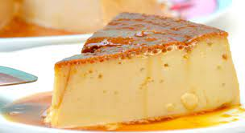

Quesillo Recipe (Venezuelan)

Description
The Venezuelan quesillo recipe, pronounced ke-see-yo, has
bounced around our family since as long as I can remember.
I frequently get calls asking about my exact recipe. It's
not everyday your grandmother asks you how to cook something
! I will however warn you: quesillo is not for everyone.
I have learned that some people just don't like the texture.
To that I can only really say that at least there will be
more for the rest of us.
ingredients:
- 1 cup white sugar
- 114 ounce can sweetened condensed milk
- 1 3/4 cups milk, or as needed
- 3 eggs
- 1 teaspoon vanilla extract
Directions:
- Step 1: Preheat the oven to 350 degrees
F (175 degrees C).
- Step 2: Prepare a bain-marie, or water bath,
by filling a 9-inch heat-proof container with water..
- Step 3: Melt sugar in a nonstick pan over medium-low
heat, stirring constantly until melted, 7 to 10 minutes; be
careful to keep it from burning. Pour sugar into a flan mold,
coating the sides to ensure that the egg/milk mixture
in the next step will not touch the container.
- Step 4: Pour sweetened condensed milk into a bowl. Fill
the empty can with milk and add to the bowl; stir in eggs and
vanilla extract. Blend well. Fold mixture with a spatula or
tap against the counter to remove air bubbles
- Step 5: Pour milk mixture into the slightly cooled flan
mold. Put the lid on and place inside the water bath; don't
let the water go over the rim.
- Step 6: Bake the quesillo in the bain-marie in the preheated oven
for 45 minutes. Pry lid open with a knife carefully; continue
baking until set, about 15 minutes more.
- Step 7: Let quesillo cool to room temperature, at least 25 minutes;
refrigerate 8 hours to overnight. Slide a knife around the edges of the mold
to loosen and invert onto a plate.